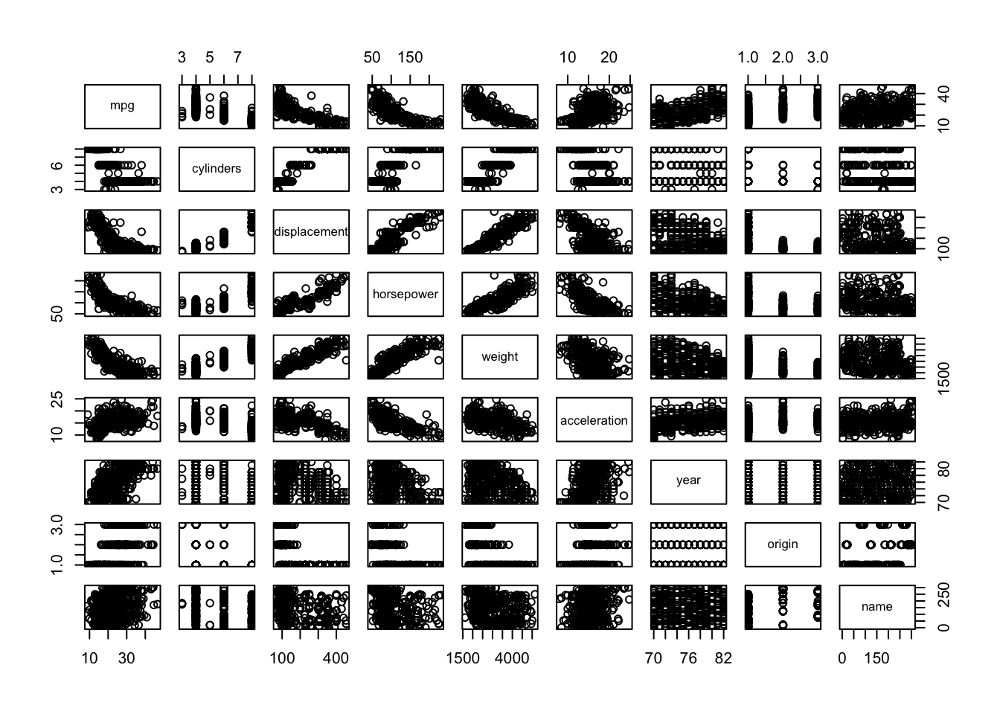
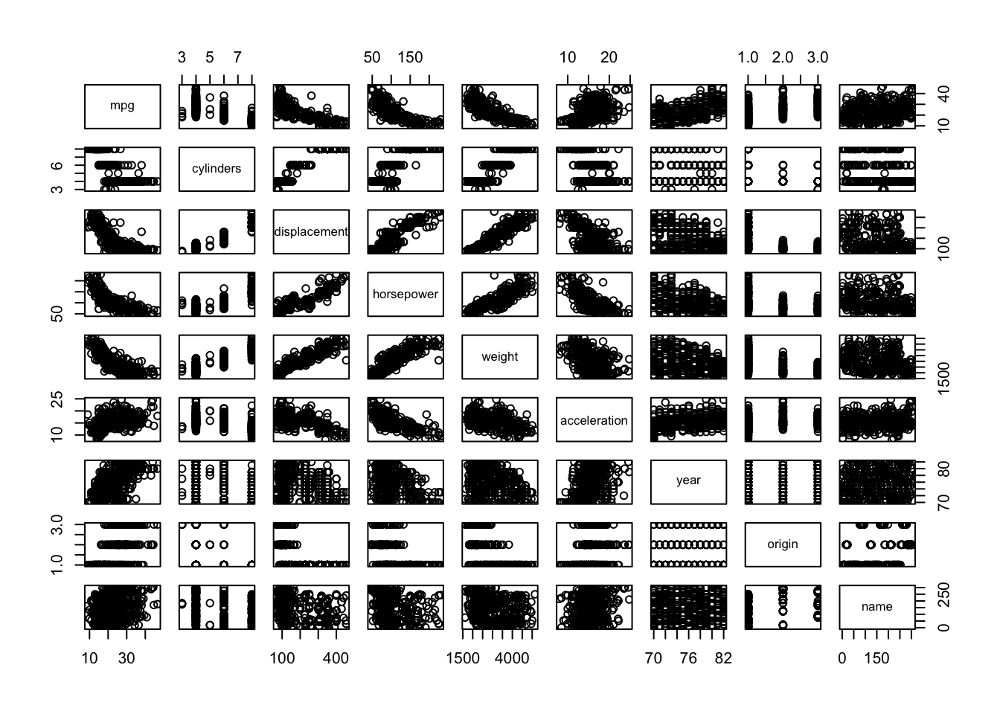
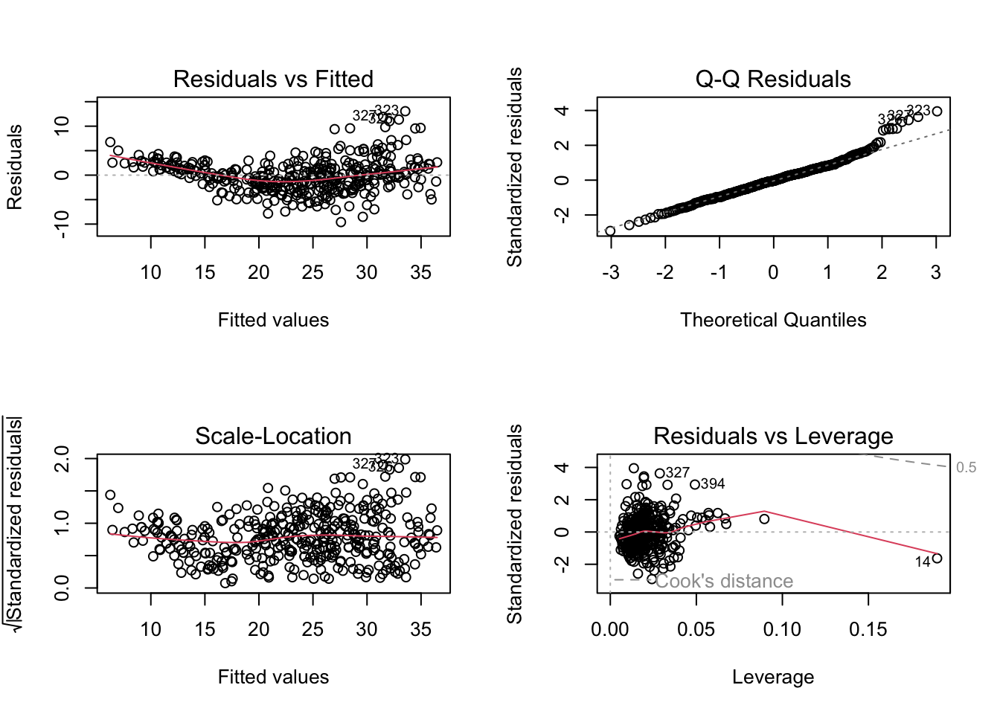

library(ISLR2)
attach(Auto)
pairs(Auto)
When you click the Render button a document will be generated that includes both content and the output of embedded code. You can embed code like this:
library(ISLR2)
attach(Auto)
pairs(Auto)
cor(). You will need to exclude the name variable, cor() which is qualitative.Auto_noname <- subset(Auto, select=-name)
cor(Auto_noname) mpg cylinders displacement horsepower weight
mpg 1.0000000 -0.7776175 -0.8051269 -0.7784268 -0.8322442
cylinders -0.7776175 1.0000000 0.9508233 0.8429834 0.8975273
displacement -0.8051269 0.9508233 1.0000000 0.8972570 0.9329944
horsepower -0.7784268 0.8429834 0.8972570 1.0000000 0.8645377
weight -0.8322442 0.8975273 0.9329944 0.8645377 1.0000000
acceleration 0.4233285 -0.5046834 -0.5438005 -0.6891955 -0.4168392
year 0.5805410 -0.3456474 -0.3698552 -0.4163615 -0.3091199
origin 0.5652088 -0.5689316 -0.6145351 -0.4551715 -0.5850054
acceleration year origin
mpg 0.4233285 0.5805410 0.5652088
cylinders -0.5046834 -0.3456474 -0.5689316
displacement -0.5438005 -0.3698552 -0.6145351
horsepower -0.6891955 -0.4163615 -0.4551715
weight -0.4168392 -0.3091199 -0.5850054
acceleration 1.0000000 0.2903161 0.2127458
year 0.2903161 1.0000000 0.1815277
origin 0.2127458 0.1815277 1.0000000lm() function to perform a multiple linear regression with mpg as the response and all other variables except name as the predictors. Use the summary() function to print the results. Comment on the output.fit1 <- lm(mpg ~ . - name, data=Auto)
summary(fit1)
Call:
lm(formula = mpg ~ . - name, data = Auto)
Residuals:
Min 1Q Median 3Q Max
-9.5903 -2.1565 -0.1169 1.8690 13.0604
Coefficients:
Estimate Std. Error t value Pr(>|t|)
(Intercept) -17.218435 4.644294 -3.707 0.00024 ***
cylinders -0.493376 0.323282 -1.526 0.12780
displacement 0.019896 0.007515 2.647 0.00844 **
horsepower -0.016951 0.013787 -1.230 0.21963
weight -0.006474 0.000652 -9.929 < 2e-16 ***
acceleration 0.080576 0.098845 0.815 0.41548
year 0.750773 0.050973 14.729 < 2e-16 ***
origin 1.426141 0.278136 5.127 4.67e-07 ***
---
Signif. codes: 0 '***' 0.001 '**' 0.01 '*' 0.05 '.' 0.1 ' ' 1
Residual standard error: 3.328 on 384 degrees of freedom
Multiple R-squared: 0.8215, Adjusted R-squared: 0.8182
F-statistic: 252.4 on 7 and 384 DF, p-value: < 2.2e-16Yes? For example, we see that the p values for the intercept, displacement, weight, year and origin are significant. The rest not really. The R squared is high:
summary(fit1)$r.squared # = 0.821[1] 0.8214781I responded here above.
year variable suggest?coefficients(fit1)[7] # = 0.7507727 year
0.7507727 This suggests the newer the car, the higher the mpg.
plot() function to produce diagn. plots of the linear regression fit. What do you notice.par(mfrow=c(2,2))
plot(fit1)